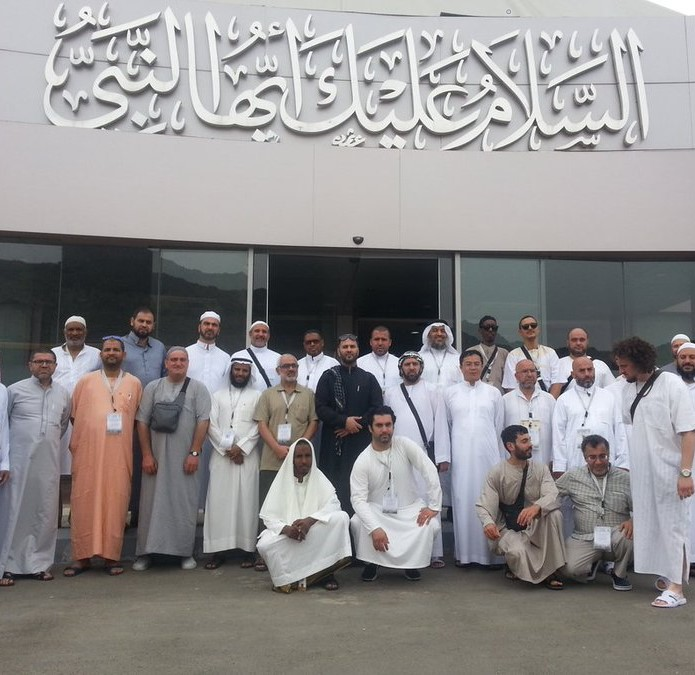

تُعتبر مكة من أجمل المناطق السياحية على مستوى العالم، فهي تمتلك العديد من المقومات السياحية والمعالم التاريخية، بالإضافة إلى مكانتها الدينية التي تجذب السياح إليها من كل مكان
المسجد الحرام هو أعظم مسجد في الإسلام ويقع في قلب مدينة مكة غرب المملكة العربية السعودية، تتوسطه الكعبة المشرفة التي هي أول بيت وضع للناس على وجه الأرض ليعبدوا الله فيه تبعاً للعقيدة الإسلامية، وهذه هي أعظم وأقدس بقعة على وجه الأرض عند المسلمين. والمسجد الحرام هو قبلة المسلمين في صلاتهم، وإليه يحجون
هو متحف تخصصي بسيرة الرسول صل الله عليه وسلم، يوجد هذا المتحف المميز بالدور السابع في برج التجارة العالمي بشارع العزيزية في مكة المكرمة داخل المملكة العربية السعودية، وقد تم تقسيم هذا المتحف إلى 26 قسماً منهم كل ما ورد في القرآن الكريم والسنة النبوية، من مقتنيات للرسول صلى الله عليه وسلم قام باستعمالها في حياته من أثاث وسلاح وأواني وملابس

يتكون المتحف من أربع طوابق، علاوة على ذلك توجد شرفة يستطيع الزائر للمتحف من خلالها التعرف على مكة كاملة ومشاهدتها من أعلى نقطة في مكة المبارك
حيث يحتوي الطابق الأول على مجموعة من المقتنيات المستخدمة في بناء ساعة مكة، كذلك يحتوي على أجزاء من محددات الوقت والتي كان يعمل بها قديماً
كما يستعرض الطابق الثاني الأجهزة المختلفة التي ساعدت البشر على تحديد أوقات الغروب والشروق وحركة الأرض والتي ساهمت فيما بعد في تحديد اتجاه القبلة ومواقيت الصلاة اما الطابق الثالث فيمكن الزائر من مشاهدة بث حي للنجوم والكواكب عبر بعد التلسكوبات الموجودة بالمكان، كما يمكن التعرف على مكونات الغلاف الجوي والشمس وغيرهم واخيرًا الطابق الرابع يحتوي على كتب ومجلات تحتوي على العديد من المقالات والرسالات العلمية التي تناقش حركة النجوم والكواكب وفي هذا الطابق يكون الزائر في أقرب مكان لعقارب
ساعة مكة، حيث سيجد الدينامو المحرك لعقارب الساعة
يعتبر أفضل وقت لزيارة مكة المكرمة لتأدية مناسك العمرة هو فصل الشتاء أي خلال الفترة من شهر نوفمبر الى شهر فبراير لكون الطقس مناسب فى هذة الشهور للقيام بالعمرة
created with
Website Builder Software .